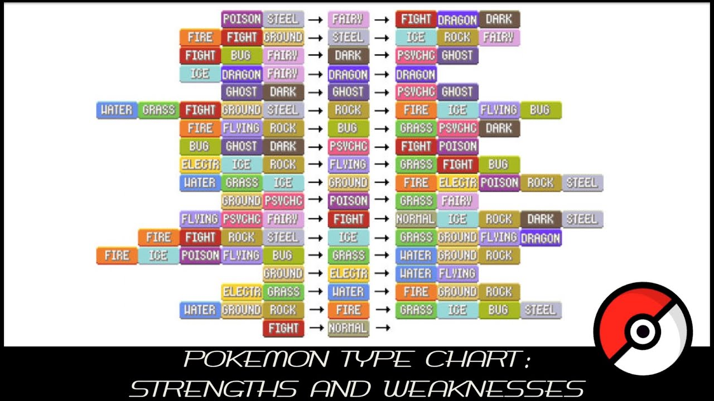

The Pokemon series originated as a series of games in the genre of a rpg. Within these games, you are meant to build teams of up to 6 pokemon. Each pokemon is assigned one to two types.
In the most recent installations of the Pokemon game series, there are a total of 18 different types, with each having its own strengths and weaknesses. This is where Pokemon's strategy is implemented. For example, if you choose a pokemon with the fire type, an opponent with a grass type pokemon would be at a disadvantage against you, while one with a water type pokemon may find themselves in an advantagous position.
 Link to download the imageIn total, there are more than a thousand pokemon, and the number only increases with every installment to the series. While it would be too much to go over them right now, a popular website used to keep track of them is pokemondb
Within the games, there are also other elements of strategy implemented, for example, some games include special transformations, and majority of the games use individual stats, on each pokemon.